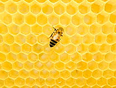
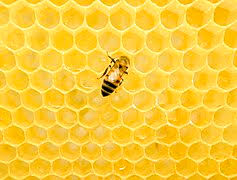
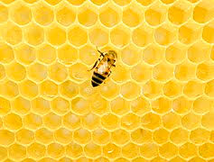

we collect all the ingredeints which are freshly made. The milk used in our cakes are collected directly from the farms and are free from antibbiotics,The flour is freshly powdered in our factory and the sugar is powdered only after filteration.The honey used in our cakes are extracted from honey comb which is made in our factoy.We always use organic products which is good for your health
